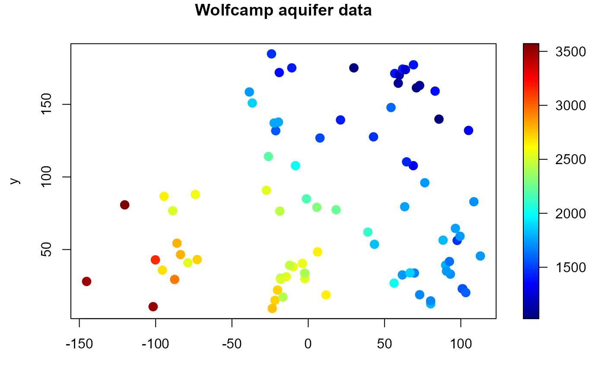

spoints (generic function) draws a scatter plot with points filled with different colors
and (optionally) adds a legend strip with the color scale
(calls splot and plot.default).
spoints(x, ...)
# S3 method for default
spoints(
x,
y = NULL,
s,
slim = range(s, finite = TRUE),
col = jet.colors(128),
breaks = NULL,
legend = TRUE,
horizontal = FALSE,
legend.shrink = 1,
legend.width = 1.2,
legend.mar = ifelse(horizontal, 3.1, 5.1),
legend.lab = NULL,
bigplot = NULL,
smallplot = NULL,
lab.breaks = NULL,
axis.args = NULL,
legend.args = NULL,
add = FALSE,
reset = TRUE,
pch = 16,
cex = 1.5,
xlab = NULL,
ylab = NULL,
asp = NA,
...
)
# S3 method for data.grid
spoints(x, s = x[[1]], xlab = NULL, ylab = NULL, ...)
# S3 method for SpatialPointsDataFrame
spoints(x, data.ind = 1, main, xlab, ylab, legend.lab, ...)object used to select a method. In the default method, it provides the x
coordinates for the plot (and optionally the y coordinates;
any reasonable way of defining the coordinates is acceptable,
see the function xy.coords for details).
additional graphical parameters (to be passed to the main plot function
or sxxxx.default; e.g. xlim, ylim, ...). NOTE:
graphical arguments passed here will only have impact on the main plot.
To change the graphical defaults for the legend use the par
function beforehand (e.g. par(cex.lab = 2) to increase colorbar labels).
y coordinates. Alternatively, a single argument x can be provided.
numerical vector containing the values used for coloring the points.
limits used to set up the color scale.
color table used to set up the color scale (see image for
details).
(optional) numeric vector with the breakpoints for the color scale:
must have one more breakpoint than col and be in increasing order.
logical; if TRUE (default), the plotting region is splitted into two parts,
drawing the main plot in one and the legend with the color scale in the other.
If FALSE only the (coloured) main plot is drawn and the arguments related
to the legend are ignored (splot is not called).
logical; if FALSE (default) legend will be a vertical strip on the
right side. If TRUE the legend strip will be along the bottom.
amount to shrink the size of legend relative to the full height or width of the plot.
width in characters of the legend strip. Default is 1.2, a little bigger that the width of a character.
width in characters of legend margin that has the axis. Default is 5.1 for a vertical legend and 3.1 for a horizontal legend.
label for the axis of the color legend. Default is no label as this is usual evident from the plot title.
plot coordinates for main plot. If not passed, and legend
is TRUE, these will be determined within the function.
plot coordinates for legend strip. If not passed, and legend
is TRUE, these will be determined within the function.
if breaks are supplied these are text string labels to put at each break value. This is intended to label axis on a transformed scale such as logs.
additional arguments for the axis function used to create
the legend axis (see image.plot for details).
arguments for a complete specification of the legend
label. This is in the form of list and is just passed to the mtext
function. Usually this will not be needed (see image.plot
for details).
logical; if TRUE the scatter plot is just added
to the existing plot.
logical; if FALSE the plotting region
(par("plt")) will not be reset to make it possible to add more features
to the plot (e.g. using functions such as points or lines). If TRUE (default)
the plot parameters will be reset to the values before entering the function.
vector of plotting characters or symbols: see points.
numerical vector giving the amount by which plotting characters
and symbols should be scaled relative to the default. This works as a multiple
of par("cex").
label for the x axis, defaults to a description of x.
label for the y axis, defaults to a description of y.
the y/x aspect ratio, see plot.window.
integer (or character) with the index (or name) of the data component.
an overall title for the plot.
Invisibly returns a list with the following 3 components:
plot coordinates of the main plot. These values may be useful for drawing a plot without the legend that is the same size as the plots with legends.
plot coordinates of the secondary plot (legend strip).
previous graphical parameters (par(old.par)
will reset plot parameters to the values before entering the function).
spoints.SpatialPointsDataFrame sets default values for some of the arguments
from attributes of the object x (if present; see e.g. precipitation).
After exiting, the plotting region may be changed
(par("plt")) to make it possible to add more features to the plot
(set reset = FALSE to avoid this).
with( aquifer, spoints(lon, lat, head, main = "Wolfcamp aquifer data"))
